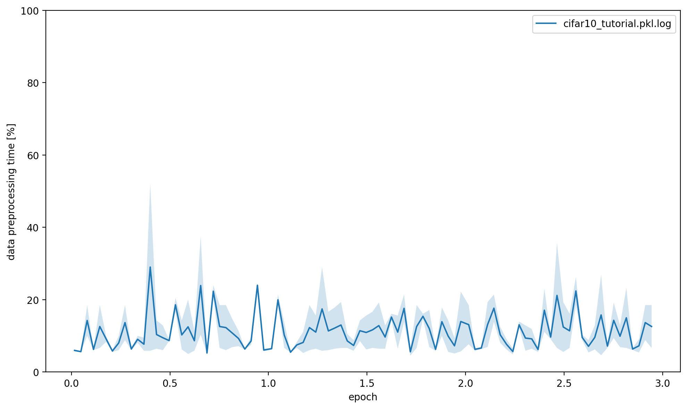
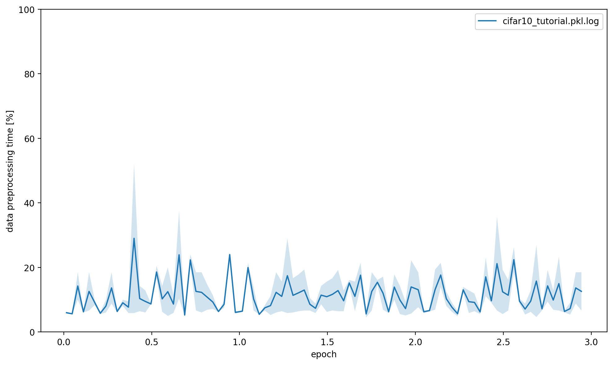

Cifar10
On this page
Cifar10¶
This page gives a quick introduction to OpenPifPaf’s Cifar10 plugin that is part of openpifpaf.plugins.
It demonstrates the plugin architecture.
There already is a nice dataset for CIFAR10 in torchvision and a related PyTorch tutorial.
The plugin adds a DataModule that uses this dataset.
Let’s start with them setup for this notebook and registering all available OpenPifPaf plugins:
print(openpifpaf.plugin.REGISTERED.keys())
dict_keys(['openpifpaf.plugins.animalpose', 'openpifpaf.plugins.apollocar3d', 'openpifpaf.plugins.cifar10', 'openpifpaf.plugins.coco', 'openpifpaf.plugins.crowdpose', 'openpifpaf.plugins.nuscenes', 'openpifpaf.plugins.posetrack', 'openpifpaf.plugins.wholebody'])
Next, we configure and instantiate the Cifar10 datamodule and look at the configured head metas:
# configure
openpifpaf.plugins.cifar10.datamodule.Cifar10.debug = True
openpifpaf.plugins.cifar10.datamodule.Cifar10.batch_size = 1
# instantiate and inspect
datamodule = openpifpaf.plugins.cifar10.datamodule.Cifar10()
datamodule.set_loader_workers(0) # no multi-processing to see debug outputs in main thread
datamodule.head_metas
[CifDet(name='cifdet', dataset='cifar10', head_index=None, base_stride=None, upsample_stride=1, categories=('plane', 'car', 'bird', 'cat', 'deer', 'dog', 'frog', 'horse', 'ship', 'truck'), training_weights=None)]
We see here that CIFAR10 is being treated as a detection dataset (CifDet) and has 10 categories.
To create a network, we use the factory() function that takes the name of the base network cifar10net and the list of head metas.
net = openpifpaf.network.Factory(base_name='cifar10net').factory(head_metas=datamodule.head_metas)
We can inspect the training data that is returned from datamodule.train_loader():
# configure visualization
openpifpaf.visualizer.Base.set_all_indices(['cifdet:9:regression']) # category 9 = truck
# Create a wrapper for a data loader that iterates over a set of matplotlib axes.
# The only purpose is to set a different matplotlib axis before each call to
# retrieve the next image from the data_loader so that it produces multiple
# debug images in one canvas side-by-side.
def loop_over_axes(axes, data_loader):
previous_common_ax = openpifpaf.visualizer.Base.common_ax
train_loader_iter = iter(data_loader)
for ax in axes.reshape(-1):
openpifpaf.visualizer.Base.common_ax = ax
yield next(train_loader_iter, None)
openpifpaf.visualizer.Base.common_ax = previous_common_ax
# create a canvas and loop over the first few entries in the training data
with openpifpaf.show.canvas(ncols=6, nrows=3, figsize=(10, 5)) as axs:
for images, targets, meta in loop_over_axes(axs, datamodule.train_loader()):
pass

Training¶
We train a very small network, cifar10net, for only one epoch. Afterwards, we will investigate its predictions.
%%bash
python -m openpifpaf.train \
--dataset=cifar10 --basenet=cifar10net --log-interval=50 \
--epochs=3 --lr=0.0003 --momentum=0.95 --batch-size=16 \
--lr-warm-up-epochs=0.1 --lr-decay 2.0 2.5 --lr-decay-epochs=0.1 \
--loader-workers=2 --output=cifar10_tutorial.pkl
INFO:__main__:neural network device: cpu (CUDA available: False, count: 0)
INFO:openpifpaf.network.basenetworks:cifar10net: stride = 16, output features = 128
INFO:openpifpaf.network.losses.multi_head:multihead loss: ['cifar10.cifdet.c', 'cifar10.cifdet.vec', 'cifar10.cifdet.scales'], [1.0, 1.0, 1.0]
INFO:openpifpaf.logger:{'type': 'process', 'argv': ['/opt/hostedtoolcache/Python/3.8.12/x64/lib/python3.8/site-packages/openpifpaf/train.py', '--dataset=cifar10', '--basenet=cifar10net', '--log-interval=50', '--epochs=3', '--lr=0.0003', '--momentum=0.95', '--batch-size=16', '--lr-warm-up-epochs=0.1', '--lr-decay', '2.0', '2.5', '--lr-decay-epochs=0.1', '--loader-workers=2', '--output=cifar10_tutorial.pkl'], 'args': {'output': 'cifar10_tutorial.pkl', 'disable_cuda': False, 'ddp': False, 'local_rank': None, 'sync_batchnorm': True, 'quiet': False, 'debug': False, 'log_stats': False, 'resnet_pretrained': True, 'resnet_pool0_stride': 0, 'resnet_input_conv_stride': 2, 'resnet_input_conv2_stride': 0, 'resnet_block5_dilation': 1, 'resnet_remove_last_block': False, 'xcit_out_channels': None, 'xcit_out_maxpool': False, 'xcit_pretrained': True, 'shufflenetv2k_input_conv2_stride': 0, 'shufflenetv2k_input_conv2_outchannels': None, 'shufflenetv2k_stage4_dilation': 1, 'shufflenetv2k_kernel': 5, 'shufflenetv2k_conv5_as_stage': False, 'shufflenetv2k_instance_norm': False, 'shufflenetv2k_group_norm': False, 'shufflenetv2k_leaky_relu': False, 'mobilenetv2_pretrained': True, 'swin_drop_path_rate': 0.2, 'swin_input_upsample': False, 'swin_use_fpn': False, 'swin_fpn_out_channels': None, 'swin_fpn_level': 3, 'swin_pretrained': True, 'squeezenet_pretrained': True, 'shufflenetv2_pretrained': True, 'mobilenetv3_pretrained': True, 'cf4_dropout': 0.0, 'cf4_inplace_ops': True, 'checkpoint': None, 'basenet': 'cifar10net', 'cross_talk': 0.0, 'download_progress': True, 'head_consolidation': 'filter_and_extend', 'lambdas': None, 'component_lambdas': None, 'auto_tune_mtl': False, 'auto_tune_mtl_variance': False, 'task_sparsity_weight': 0.0, 'loss_prescale': 1.0, 'regression_loss': 'laplace', 'bce_total_soft_clamp': None, 'soft_clamp': 5.0, 'b_scale': 1.0, 'scale_log': False, 'scale_soft_clamp': 5.0, 'background_weight': 1.0, 'focal_alpha': 0.5, 'focal_gamma': 1.0, 'focal_detach': False, 'focal_clamp': True, 'bce_min': 0.0, 'bce_soft_clamp': 5.0, 'bce_background_clamp': -15.0, 'laplace_soft_clamp': 5.0, 'r_smooth': 0.0, 'epochs': 3, 'train_batches': None, 'val_batches': None, 'clip_grad_norm': 0.0, 'clip_grad_value': 0.0, 'log_interval': 50, 'val_interval': 1, 'stride_apply': 1, 'fix_batch_norm': False, 'ema': 0.01, 'profile': None, 'cif_side_length': 4, 'caf_min_size': 3, 'caf_fixed_size': False, 'caf_aspect_ratio': 0.0, 'encoder_suppress_selfhidden': True, 'encoder_suppress_invisible': False, 'encoder_suppress_collision': False, 'momentum': 0.95, 'beta2': 0.999, 'adam_eps': 1e-06, 'nesterov': True, 'weight_decay': 0.0, 'adam': False, 'amsgrad': False, 'lr': 0.0003, 'lr_decay': [2.0, 2.5], 'lr_decay_factor': 0.1, 'lr_decay_epochs': 0.1, 'lr_warm_up_start_epoch': 0, 'lr_warm_up_epochs': 0.1, 'lr_warm_up_factor': 0.001, 'lr_warm_restarts': [], 'lr_warm_restart_duration': 0.5, 'dataset': 'cifar10', 'loader_workers': 2, 'batch_size': 16, 'dataset_weights': None, 'animal_train_annotations': 'data-animalpose/annotations/animal_keypoints_20_train.json', 'animal_val_annotations': 'data-animalpose/annotations/animal_keypoints_20_val.json', 'animal_train_image_dir': 'data-animalpose/images/train/', 'animal_val_image_dir': 'data-animalpose/images/val/', 'animal_square_edge': 513, 'animal_extended_scale': False, 'animal_orientation_invariant': 0.0, 'animal_blur': 0.0, 'animal_augmentation': True, 'animal_rescale_images': 1.0, 'animal_upsample': 1, 'animal_min_kp_anns': 1, 'animal_bmin': 1, 'animal_eval_test2017': False, 'animal_eval_testdev2017': False, 'animal_eval_annotation_filter': True, 'animal_eval_long_edge': 0, 'animal_eval_extended_scale': False, 'animal_eval_orientation_invariant': 0.0, 'apollo_train_annotations': 'data-apollocar3d/annotations/apollo_keypoints_66_train.json', 'apollo_val_annotations': 'data-apollocar3d/annotations/apollo_keypoints_66_val.json', 'apollo_train_image_dir': 'data-apollocar3d/images/train/', 'apollo_val_image_dir': 'data-apollocar3d/images/val/', 'apollo_square_edge': 513, 'apollo_extended_scale': False, 'apollo_orientation_invariant': 0.0, 'apollo_blur': 0.0, 'apollo_augmentation': True, 'apollo_rescale_images': 1.0, 'apollo_upsample': 1, 'apollo_min_kp_anns': 1, 'apollo_bmin': 1, 'apollo_apply_local_centrality': False, 'apollo_eval_annotation_filter': True, 'apollo_eval_long_edge': 0, 'apollo_eval_extended_scale': False, 'apollo_eval_orientation_invariant': 0.0, 'apollo_use_24_kps': False, 'cifar10_root_dir': 'data-cifar10/', 'cifar10_download': False, 'cocodet_train_annotations': 'data-mscoco/annotations/instances_train2017.json', 'cocodet_val_annotations': 'data-mscoco/annotations/instances_val2017.json', 'cocodet_train_image_dir': 'data-mscoco/images/train2017/', 'cocodet_val_image_dir': 'data-mscoco/images/val2017/', 'cocodet_square_edge': 513, 'cocodet_extended_scale': False, 'cocodet_orientation_invariant': 0.0, 'cocodet_blur': 0.0, 'cocodet_augmentation': True, 'cocodet_rescale_images': 1.0, 'cocodet_upsample': 1, 'cocokp_train_annotations': 'data-mscoco/annotations/person_keypoints_train2017.json', 'cocokp_val_annotations': 'data-mscoco/annotations/person_keypoints_val2017.json', 'cocokp_train_image_dir': 'data-mscoco/images/train2017/', 'cocokp_val_image_dir': 'data-mscoco/images/val2017/', 'cocokp_square_edge': 385, 'cocokp_with_dense': False, 'cocokp_extended_scale': False, 'cocokp_orientation_invariant': 0.0, 'cocokp_blur': 0.0, 'cocokp_augmentation': True, 'cocokp_rescale_images': 1.0, 'cocokp_upsample': 1, 'cocokp_min_kp_anns': 1, 'cocokp_bmin': 0.1, 'cocokp_eval_test2017': False, 'cocokp_eval_testdev2017': False, 'coco_eval_annotation_filter': True, 'coco_eval_long_edge': 641, 'coco_eval_extended_scale': False, 'coco_eval_orientation_invariant': 0.0, 'crowdpose_train_annotations': 'data-crowdpose/json/crowdpose_train.json', 'crowdpose_val_annotations': 'data-crowdpose/json/crowdpose_val.json', 'crowdpose_image_dir': 'data-crowdpose/images/', 'crowdpose_square_edge': 385, 'crowdpose_extended_scale': False, 'crowdpose_orientation_invariant': 0.0, 'crowdpose_augmentation': True, 'crowdpose_rescale_images': 1.0, 'crowdpose_upsample': 1, 'crowdpose_min_kp_anns': 1, 'crowdpose_eval_test': False, 'crowdpose_eval_long_edge': 641, 'crowdpose_eval_extended_scale': False, 'crowdpose_eval_orientation_invariant': 0.0, 'crowdpose_index': None, 'nuscenes_train_annotations': '../../../NuScenes/mscoco_style_annotations/nuimages_v1.0-train.json', 'nuscenes_val_annotations': '../../../NuScenes/mscoco_style_annotations/nuimages_v1.0-val.json', 'nuscenes_train_image_dir': '../../../NuScenes/nuimages-v1.0-all-samples', 'nuscenes_val_image_dir': '../../../NuScenes/nuimages-v1.0-all-samples', 'nuscenes_square_edge': 513, 'nuscenes_extended_scale': False, 'nuscenes_orientation_invariant': 0.0, 'nuscenes_blur': 0.0, 'nuscenes_augmentation': True, 'nuscenes_rescale_images': 1.0, 'nuscenes_upsample': 1, 'posetrack2018_train_annotations': 'data-posetrack2018/annotations/train/*.json', 'posetrack2018_val_annotations': 'data-posetrack2018/annotations/val/*.json', 'posetrack2018_eval_annotations': 'data-posetrack2018/annotations/val/*.json', 'posetrack2018_data_root': 'data-posetrack2018', 'posetrack_square_edge': 385, 'posetrack_with_dense': False, 'posetrack_augmentation': True, 'posetrack_rescale_images': 1.0, 'posetrack_upsample': 1, 'posetrack_min_kp_anns': 1, 'posetrack_bmin': 0.1, 'posetrack_sample_pairing': 0.0, 'posetrack_image_augmentations': 0.0, 'posetrack_max_shift': 30.0, 'posetrack_eval_long_edge': 801, 'posetrack_eval_extended_scale': False, 'posetrack_eval_orientation_invariant': 0.0, 'posetrack_ablation_without_tcaf': False, 'posetrack2017_eval_annotations': 'data-posetrack2017/annotations/val/*.json', 'posetrack2017_data_root': 'data-posetrack2017', 'cocokpst_max_shift': 30.0, 'wholebody_train_annotations': 'data-mscoco/annotations/person_keypoints_train2017_wholebody_pifpaf_style.json', 'wholebody_val_annotations': 'data-mscoco/annotations/coco_wholebody_val_v1.0.json', 'wholebody_train_image_dir': 'data-mscoco/images/train2017/', 'wholebody_val_image_dir': 'data-mscoco/images/val2017', 'wholebody_square_edge': 385, 'wholebody_extended_scale': False, 'wholebody_orientation_invariant': 0.0, 'wholebody_blur': 0.0, 'wholebody_augmentation': True, 'wholebody_rescale_images': 1.0, 'wholebody_upsample': 1, 'wholebody_min_kp_anns': 1, 'wholebody_bmin': 1.0, 'wholebody_apply_local_centrality': False, 'wholebody_eval_test2017': False, 'wholebody_eval_testdev2017': False, 'wholebody_eval_annotation_filter': True, 'wholebody_eval_long_edge': 641, 'wholebody_eval_extended_scale': False, 'wholebody_eval_orientation_invariant': 0.0, 'save_all': None, 'show': False, 'image_width': None, 'image_height': None, 'image_dpi_factor': 2.0, 'image_min_dpi': 50.0, 'show_file_extension': 'jpeg', 'textbox_alpha': 0.5, 'text_color': 'white', 'font_size': 8, 'monocolor_connections': False, 'line_width': None, 'skeleton_solid_threshold': 0.5, 'show_box': False, 'white_overlay': False, 'show_joint_scales': False, 'show_joint_confidences': False, 'show_decoding_order': False, 'show_frontier_order': False, 'show_only_decoded_connections': False, 'video_fps': 10, 'video_dpi': 100, 'debug_indices': [], 'device': device(type='cpu'), 'pin_memory': False}, 'version': '0.13.2', 'plugin_versions': {}, 'hostname': 'fv-az182-211'}
INFO:openpifpaf.optimize:SGD optimizer
INFO:openpifpaf.optimize:training batches per epoch = 3125
INFO:openpifpaf.network.trainer:{'type': 'config', 'field_names': ['cifar10.cifdet.c', 'cifar10.cifdet.vec', 'cifar10.cifdet.scales']}
INFO:openpifpaf.network.trainer:model written: cifar10_tutorial.pkl.epoch000
INFO:openpifpaf.network.trainer:{'type': 'train', 'epoch': 0, 'batch': 0, 'n_batches': 3125, 'time': 0.028, 'data_time': 0.079, 'lr': 3e-07, 'loss': 68.619, 'head_losses': [2.033, 66.586, 0.0]}
INFO:openpifpaf.network.trainer:{'type': 'train', 'epoch': 0, 'batch': 50, 'n_batches': 3125, 'time': 0.019, 'data_time': 0.001, 'lr': 9.1e-07, 'loss': 68.57, 'head_losses': [2.043, 66.527, 0.0]}
INFO:openpifpaf.network.trainer:{'type': 'train', 'epoch': 0, 'batch': 100, 'n_batches': 3125, 'time': 0.021, 'data_time': 0.002, 'lr': 2.74e-06, 'loss': 68.634, 'head_losses': [2.017, 66.617, 0.0]}
INFO:openpifpaf.network.trainer:{'type': 'train', 'epoch': 0, 'batch': 150, 'n_batches': 3125, 'time': 0.021, 'data_time': 0.001, 'lr': 8.26e-06, 'loss': 68.531, 'head_losses': [1.978, 66.553, 0.0]}
INFO:openpifpaf.network.trainer:{'type': 'train', 'epoch': 0, 'batch': 200, 'n_batches': 3125, 'time': 0.021, 'data_time': 0.001, 'lr': 2.495e-05, 'loss': 67.837, 'head_losses': [2.064, 65.773, 0.0]}
INFO:openpifpaf.network.trainer:{'type': 'train', 'epoch': 0, 'batch': 250, 'n_batches': 3125, 'time': 0.021, 'data_time': 0.001, 'lr': 7.536e-05, 'loss': 66.453, 'head_losses': [2.085, 64.367, 0.0]}
INFO:openpifpaf.network.trainer:{'type': 'train', 'epoch': 0, 'batch': 300, 'n_batches': 3125, 'time': 0.021, 'data_time': 0.001, 'lr': 0.00022757, 'loss': 53.501, 'head_losses': [6.952, 46.549, 0.0]}
INFO:openpifpaf.network.trainer:{'type': 'train', 'epoch': 0, 'batch': 350, 'n_batches': 3125, 'time': 0.018, 'data_time': 0.004, 'lr': 0.0003, 'loss': 24.941, 'head_losses': [-0.827, 25.767, 0.0]}
INFO:openpifpaf.network.trainer:{'type': 'train', 'epoch': 0, 'batch': 400, 'n_batches': 3125, 'time': 0.02, 'data_time': 0.001, 'lr': 0.0003, 'loss': 4.959, 'head_losses': [-6.739, 11.699, 0.0]}
INFO:openpifpaf.network.trainer:{'type': 'train', 'epoch': 0, 'batch': 450, 'n_batches': 3125, 'time': 0.02, 'data_time': 0.002, 'lr': 0.0003, 'loss': -3.198, 'head_losses': [-8.012, 4.815, 0.0]}
INFO:openpifpaf.network.trainer:{'type': 'train', 'epoch': 0, 'batch': 500, 'n_batches': 3125, 'time': 0.019, 'data_time': 0.001, 'lr': 0.0003, 'loss': -1.375, 'head_losses': [-8.507, 7.132, 0.0]}
INFO:openpifpaf.network.trainer:{'type': 'train', 'epoch': 0, 'batch': 550, 'n_batches': 3125, 'time': 0.022, 'data_time': 0.001, 'lr': 0.0003, 'loss': -7.51, 'head_losses': [-8.885, 1.375, 0.0]}
INFO:openpifpaf.network.trainer:{'type': 'train', 'epoch': 0, 'batch': 600, 'n_batches': 3125, 'time': 0.018, 'data_time': 0.002, 'lr': 0.0003, 'loss': -6.612, 'head_losses': [-8.817, 2.205, 0.0]}
INFO:openpifpaf.network.trainer:{'type': 'train', 'epoch': 0, 'batch': 650, 'n_batches': 3125, 'time': 0.019, 'data_time': 0.002, 'lr': 0.0003, 'loss': -6.722, 'head_losses': [-8.928, 2.206, 0.0]}
INFO:openpifpaf.network.trainer:{'type': 'train', 'epoch': 0, 'batch': 700, 'n_batches': 3125, 'time': 0.02, 'data_time': 0.002, 'lr': 0.0003, 'loss': -6.889, 'head_losses': [-9.089, 2.2, 0.0]}
INFO:openpifpaf.network.trainer:{'type': 'train', 'epoch': 0, 'batch': 750, 'n_batches': 3125, 'time': 0.02, 'data_time': 0.001, 'lr': 0.0003, 'loss': -7.687, 'head_losses': [-9.227, 1.54, 0.0]}
INFO:openpifpaf.network.trainer:{'type': 'train', 'epoch': 0, 'batch': 800, 'n_batches': 3125, 'time': 0.023, 'data_time': 0.002, 'lr': 0.0003, 'loss': -7.359, 'head_losses': [-9.121, 1.762, 0.0]}
INFO:openpifpaf.network.trainer:{'type': 'train', 'epoch': 0, 'batch': 850, 'n_batches': 3125, 'time': 0.021, 'data_time': 0.002, 'lr': 0.0003, 'loss': -7.15, 'head_losses': [-9.131, 1.981, 0.0]}
INFO:openpifpaf.network.trainer:{'type': 'train', 'epoch': 0, 'batch': 900, 'n_batches': 3125, 'time': 0.019, 'data_time': 0.001, 'lr': 0.0003, 'loss': -8.614, 'head_losses': [-9.297, 0.684, 0.0]}
INFO:openpifpaf.network.trainer:{'type': 'train', 'epoch': 0, 'batch': 950, 'n_batches': 3125, 'time': 0.021, 'data_time': 0.001, 'lr': 0.0003, 'loss': -8.745, 'head_losses': [-9.216, 0.471, 0.0]}
INFO:openpifpaf.network.trainer:{'type': 'train', 'epoch': 0, 'batch': 1000, 'n_batches': 3125, 'time': 0.02, 'data_time': 0.001, 'lr': 0.0003, 'loss': -7.569, 'head_losses': [-9.021, 1.452, 0.0]}
INFO:openpifpaf.network.trainer:{'type': 'train', 'epoch': 0, 'batch': 1050, 'n_batches': 3125, 'time': 0.022, 'data_time': 0.002, 'lr': 0.0003, 'loss': -8.89, 'head_losses': [-9.309, 0.419, 0.0]}
INFO:openpifpaf.network.trainer:{'type': 'train', 'epoch': 0, 'batch': 1100, 'n_batches': 3125, 'time': 0.021, 'data_time': 0.001, 'lr': 0.0003, 'loss': -8.481, 'head_losses': [-9.334, 0.853, 0.0]}
INFO:openpifpaf.network.trainer:{'type': 'train', 'epoch': 0, 'batch': 1150, 'n_batches': 3125, 'time': 0.021, 'data_time': 0.001, 'lr': 0.0003, 'loss': -8.642, 'head_losses': [-9.457, 0.815, 0.0]}
INFO:openpifpaf.network.trainer:{'type': 'train', 'epoch': 0, 'batch': 1200, 'n_batches': 3125, 'time': 0.019, 'data_time': 0.001, 'lr': 0.0003, 'loss': -8.255, 'head_losses': [-9.045, 0.79, 0.0]}
INFO:openpifpaf.network.trainer:{'type': 'train', 'epoch': 0, 'batch': 1250, 'n_batches': 3125, 'time': 0.021, 'data_time': 0.001, 'lr': 0.0003, 'loss': -9.025, 'head_losses': [-9.536, 0.511, 0.0]}
INFO:openpifpaf.network.trainer:{'type': 'train', 'epoch': 0, 'batch': 1300, 'n_batches': 3125, 'time': 0.02, 'data_time': 0.001, 'lr': 0.0003, 'loss': -8.545, 'head_losses': [-9.591, 1.046, 0.0]}
INFO:openpifpaf.network.trainer:{'type': 'train', 'epoch': 0, 'batch': 1350, 'n_batches': 3125, 'time': 0.017, 'data_time': 0.006, 'lr': 0.0003, 'loss': -7.279, 'head_losses': [-9.809, 2.53, 0.0]}
INFO:openpifpaf.network.trainer:{'type': 'train', 'epoch': 0, 'batch': 1400, 'n_batches': 3125, 'time': 0.02, 'data_time': 0.001, 'lr': 0.0003, 'loss': -8.096, 'head_losses': [-9.654, 1.558, 0.0]}
INFO:openpifpaf.network.trainer:{'type': 'train', 'epoch': 0, 'batch': 1450, 'n_batches': 3125, 'time': 0.02, 'data_time': 0.003, 'lr': 0.0003, 'loss': -8.466, 'head_losses': [-9.551, 1.084, 0.0]}
INFO:openpifpaf.network.trainer:{'type': 'train', 'epoch': 0, 'batch': 1500, 'n_batches': 3125, 'time': 0.019, 'data_time': 0.001, 'lr': 0.0003, 'loss': -8.482, 'head_losses': [-9.902, 1.42, 0.0]}
INFO:openpifpaf.network.trainer:{'type': 'train', 'epoch': 0, 'batch': 1550, 'n_batches': 3125, 'time': 0.02, 'data_time': 0.001, 'lr': 0.0003, 'loss': -9.261, 'head_losses': [-9.908, 0.647, 0.0]}
INFO:openpifpaf.network.trainer:{'type': 'train', 'epoch': 0, 'batch': 1600, 'n_batches': 3125, 'time': 0.021, 'data_time': 0.001, 'lr': 0.0003, 'loss': -9.238, 'head_losses': [-9.656, 0.418, 0.0]}
INFO:openpifpaf.network.trainer:{'type': 'train', 'epoch': 0, 'batch': 1650, 'n_batches': 3125, 'time': 0.019, 'data_time': 0.001, 'lr': 0.0003, 'loss': -9.272, 'head_losses': [-9.689, 0.417, 0.0]}
INFO:openpifpaf.network.trainer:{'type': 'train', 'epoch': 0, 'batch': 1700, 'n_batches': 3125, 'time': 0.019, 'data_time': 0.001, 'lr': 0.0003, 'loss': -8.424, 'head_losses': [-9.996, 1.572, 0.0]}
INFO:openpifpaf.network.trainer:{'type': 'train', 'epoch': 0, 'batch': 1750, 'n_batches': 3125, 'time': 0.021, 'data_time': 0.001, 'lr': 0.0003, 'loss': -9.526, 'head_losses': [-9.823, 0.297, 0.0]}
INFO:openpifpaf.network.trainer:{'type': 'train', 'epoch': 0, 'batch': 1800, 'n_batches': 3125, 'time': 0.02, 'data_time': 0.001, 'lr': 0.0003, 'loss': -9.299, 'head_losses': [-9.631, 0.332, 0.0]}
INFO:openpifpaf.network.trainer:{'type': 'train', 'epoch': 0, 'batch': 1850, 'n_batches': 3125, 'time': 0.021, 'data_time': 0.001, 'lr': 0.0003, 'loss': -8.938, 'head_losses': [-9.413, 0.475, 0.0]}
INFO:openpifpaf.network.trainer:{'type': 'train', 'epoch': 0, 'batch': 1900, 'n_batches': 3125, 'time': 0.021, 'data_time': 0.001, 'lr': 0.0003, 'loss': -9.169, 'head_losses': [-9.613, 0.445, 0.0]}
INFO:openpifpaf.network.trainer:{'type': 'train', 'epoch': 0, 'batch': 1950, 'n_batches': 3125, 'time': 0.022, 'data_time': 0.002, 'lr': 0.0003, 'loss': -9.402, 'head_losses': [-9.71, 0.307, 0.0]}
INFO:openpifpaf.network.trainer:{'type': 'train', 'epoch': 0, 'batch': 2000, 'n_batches': 3125, 'time': 0.02, 'data_time': 0.001, 'lr': 0.0003, 'loss': -9.132, 'head_losses': [-9.808, 0.676, 0.0]}
INFO:openpifpaf.network.trainer:{'type': 'train', 'epoch': 0, 'batch': 2050, 'n_batches': 3125, 'time': 0.02, 'data_time': 0.001, 'lr': 0.0003, 'loss': -7.243, 'head_losses': [-9.862, 2.618, 0.0]}
INFO:openpifpaf.network.trainer:{'type': 'train', 'epoch': 0, 'batch': 2100, 'n_batches': 3125, 'time': 0.021, 'data_time': 0.001, 'lr': 0.0003, 'loss': -9.521, 'head_losses': [-9.845, 0.324, 0.0]}
INFO:openpifpaf.network.trainer:{'type': 'train', 'epoch': 0, 'batch': 2150, 'n_batches': 3125, 'time': 0.019, 'data_time': 0.001, 'lr': 0.0003, 'loss': -9.343, 'head_losses': [-9.969, 0.626, 0.0]}
INFO:openpifpaf.network.trainer:{'type': 'train', 'epoch': 0, 'batch': 2200, 'n_batches': 3125, 'time': 0.02, 'data_time': 0.001, 'lr': 0.0003, 'loss': -9.542, 'head_losses': [-9.841, 0.299, 0.0]}
INFO:openpifpaf.network.trainer:{'type': 'train', 'epoch': 0, 'batch': 2250, 'n_batches': 3125, 'time': 0.021, 'data_time': 0.001, 'lr': 0.0003, 'loss': -8.217, 'head_losses': [-9.998, 1.782, 0.0]}
INFO:openpifpaf.network.trainer:{'type': 'train', 'epoch': 0, 'batch': 2300, 'n_batches': 3125, 'time': 0.022, 'data_time': 0.001, 'lr': 0.0003, 'loss': -8.865, 'head_losses': [-9.428, 0.562, 0.0]}
INFO:openpifpaf.network.trainer:{'type': 'train', 'epoch': 0, 'batch': 2350, 'n_batches': 3125, 'time': 0.021, 'data_time': 0.001, 'lr': 0.0003, 'loss': -9.733, 'head_losses': [-9.93, 0.197, 0.0]}
INFO:openpifpaf.network.trainer:{'type': 'train', 'epoch': 0, 'batch': 2400, 'n_batches': 3125, 'time': 0.02, 'data_time': 0.001, 'lr': 0.0003, 'loss': -8.532, 'head_losses': [-9.732, 1.2, 0.0]}
INFO:openpifpaf.network.trainer:{'type': 'train', 'epoch': 0, 'batch': 2450, 'n_batches': 3125, 'time': 0.023, 'data_time': 0.002, 'lr': 0.0003, 'loss': -10.208, 'head_losses': [-10.358, 0.15, 0.0]}
INFO:openpifpaf.network.trainer:{'type': 'train', 'epoch': 0, 'batch': 2500, 'n_batches': 3125, 'time': 0.018, 'data_time': 0.004, 'lr': 0.0003, 'loss': -9.234, 'head_losses': [-10.063, 0.828, 0.0]}
INFO:openpifpaf.network.trainer:{'type': 'train', 'epoch': 0, 'batch': 2550, 'n_batches': 3125, 'time': 0.022, 'data_time': 0.001, 'lr': 0.0003, 'loss': -8.972, 'head_losses': [-10.157, 1.185, 0.0]}
INFO:openpifpaf.network.trainer:{'type': 'train', 'epoch': 0, 'batch': 2600, 'n_batches': 3125, 'time': 0.022, 'data_time': 0.002, 'lr': 0.0003, 'loss': -8.804, 'head_losses': [-9.049, 0.245, 0.0]}
INFO:openpifpaf.network.trainer:{'type': 'train', 'epoch': 0, 'batch': 2650, 'n_batches': 3125, 'time': 0.021, 'data_time': 0.001, 'lr': 0.0003, 'loss': -8.628, 'head_losses': [-9.936, 1.308, 0.0]}
INFO:openpifpaf.network.trainer:{'type': 'train', 'epoch': 0, 'batch': 2700, 'n_batches': 3125, 'time': 0.019, 'data_time': 0.001, 'lr': 0.0003, 'loss': -8.49, 'head_losses': [-10.23, 1.74, 0.0]}
INFO:openpifpaf.network.trainer:{'type': 'train', 'epoch': 0, 'batch': 2750, 'n_batches': 3125, 'time': 0.019, 'data_time': 0.001, 'lr': 0.0003, 'loss': -10.273, 'head_losses': [-10.26, -0.014, 0.0]}
INFO:openpifpaf.network.trainer:{'type': 'train', 'epoch': 0, 'batch': 2800, 'n_batches': 3125, 'time': 0.02, 'data_time': 0.001, 'lr': 0.0003, 'loss': -8.916, 'head_losses': [-9.971, 1.056, 0.0]}
INFO:openpifpaf.network.trainer:{'type': 'train', 'epoch': 0, 'batch': 2850, 'n_batches': 3125, 'time': 0.021, 'data_time': 0.001, 'lr': 0.0003, 'loss': -9.992, 'head_losses': [-10.037, 0.045, 0.0]}
INFO:openpifpaf.network.trainer:{'type': 'train', 'epoch': 0, 'batch': 2900, 'n_batches': 3125, 'time': 0.022, 'data_time': 0.002, 'lr': 0.0003, 'loss': -9.919, 'head_losses': [-10.667, 0.748, 0.0]}
INFO:openpifpaf.network.trainer:{'type': 'train', 'epoch': 0, 'batch': 2950, 'n_batches': 3125, 'time': 0.021, 'data_time': 0.001, 'lr': 0.0003, 'loss': -8.841, 'head_losses': [-9.392, 0.551, 0.0]}
INFO:openpifpaf.network.trainer:{'type': 'train', 'epoch': 0, 'batch': 3000, 'n_batches': 3125, 'time': 0.021, 'data_time': 0.001, 'lr': 0.0003, 'loss': -8.518, 'head_losses': [-9.818, 1.301, 0.0]}
INFO:openpifpaf.network.trainer:{'type': 'train', 'epoch': 0, 'batch': 3050, 'n_batches': 3125, 'time': 0.021, 'data_time': 0.001, 'lr': 0.0003, 'loss': -9.411, 'head_losses': [-9.708, 0.298, 0.0]}
INFO:openpifpaf.network.trainer:{'type': 'train', 'epoch': 0, 'batch': 3100, 'n_batches': 3125, 'time': 0.02, 'data_time': 0.002, 'lr': 0.0003, 'loss': -10.356, 'head_losses': [-10.463, 0.107, 0.0]}
INFO:openpifpaf.network.trainer:applying ema
INFO:openpifpaf.network.trainer:{'type': 'train-epoch', 'epoch': 1, 'loss': 0.16996, 'head_losses': [-8.15603, 8.32599, 0.0], 'time': 68.8, 'n_clipped_grad': 0, 'max_norm': 0.0}
INFO:openpifpaf.network.trainer:model written: cifar10_tutorial.pkl.epoch001
INFO:openpifpaf.network.trainer:{'type': 'val-epoch', 'epoch': 1, 'loss': -10.23944, 'head_losses': [-10.13092, -0.10852, 0.0], 'time': 10.5}
INFO:openpifpaf.network.trainer:restoring params from before ema
INFO:openpifpaf.network.trainer:{'type': 'train', 'epoch': 1, 'batch': 0, 'n_batches': 3125, 'time': 0.02, 'data_time': 0.064, 'lr': 0.0003, 'loss': -8.928, 'head_losses': [-9.709, 0.781, 0.0]}
INFO:openpifpaf.network.trainer:{'type': 'train', 'epoch': 1, 'batch': 50, 'n_batches': 3125, 'time': 0.021, 'data_time': 0.001, 'lr': 0.0003, 'loss': -8.162, 'head_losses': [-9.339, 1.177, 0.0]}
INFO:openpifpaf.network.trainer:{'type': 'train', 'epoch': 1, 'batch': 100, 'n_batches': 3125, 'time': 0.02, 'data_time': 0.001, 'lr': 0.0003, 'loss': -10.02, 'head_losses': [-10.118, 0.097, 0.0]}
INFO:openpifpaf.network.trainer:{'type': 'train', 'epoch': 1, 'batch': 150, 'n_batches': 3125, 'time': 0.021, 'data_time': 0.001, 'lr': 0.0003, 'loss': -9.477, 'head_losses': [-9.8, 0.323, 0.0]}
INFO:openpifpaf.network.trainer:{'type': 'train', 'epoch': 1, 'batch': 200, 'n_batches': 3125, 'time': 0.021, 'data_time': 0.001, 'lr': 0.0003, 'loss': -10.336, 'head_losses': [-10.51, 0.174, 0.0]}
INFO:openpifpaf.network.trainer:{'type': 'train', 'epoch': 1, 'batch': 250, 'n_batches': 3125, 'time': 0.021, 'data_time': 0.001, 'lr': 0.0003, 'loss': -9.076, 'head_losses': [-9.922, 0.846, 0.0]}
INFO:openpifpaf.network.trainer:{'type': 'train', 'epoch': 1, 'batch': 300, 'n_batches': 3125, 'time': 0.018, 'data_time': 0.004, 'lr': 0.0003, 'loss': -9.008, 'head_losses': [-10.339, 1.332, 0.0]}
INFO:openpifpaf.network.trainer:{'type': 'train', 'epoch': 1, 'batch': 350, 'n_batches': 3125, 'time': 0.02, 'data_time': 0.002, 'lr': 0.0003, 'loss': -9.785, 'head_losses': [-10.031, 0.246, 0.0]}
INFO:openpifpaf.network.trainer:{'type': 'train', 'epoch': 1, 'batch': 400, 'n_batches': 3125, 'time': 0.023, 'data_time': 0.002, 'lr': 0.0003, 'loss': -9.934, 'head_losses': [-10.129, 0.195, 0.0]}
INFO:openpifpaf.network.trainer:{'type': 'train', 'epoch': 1, 'batch': 450, 'n_batches': 3125, 'time': 0.02, 'data_time': 0.001, 'lr': 0.0003, 'loss': -9.871, 'head_losses': [-10.324, 0.453, 0.0]}
INFO:openpifpaf.network.trainer:{'type': 'train', 'epoch': 1, 'batch': 500, 'n_batches': 3125, 'time': 0.02, 'data_time': 0.001, 'lr': 0.0003, 'loss': -8.717, 'head_losses': [-10.323, 1.606, 0.0]}
INFO:openpifpaf.network.trainer:{'type': 'train', 'epoch': 1, 'batch': 550, 'n_batches': 3125, 'time': 0.02, 'data_time': 0.001, 'lr': 0.0003, 'loss': -10.083, 'head_losses': [-10.3, 0.217, 0.0]}
INFO:openpifpaf.network.trainer:{'type': 'train', 'epoch': 1, 'batch': 600, 'n_batches': 3125, 'time': 0.03, 'data_time': 0.001, 'lr': 0.0003, 'loss': -10.055, 'head_losses': [-10.347, 0.292, 0.0]}
INFO:openpifpaf.network.trainer:{'type': 'train', 'epoch': 1, 'batch': 650, 'n_batches': 3125, 'time': 0.022, 'data_time': 0.002, 'lr': 0.0003, 'loss': -9.378, 'head_losses': [-9.909, 0.531, 0.0]}
INFO:openpifpaf.network.trainer:{'type': 'train', 'epoch': 1, 'batch': 700, 'n_batches': 3125, 'time': 0.02, 'data_time': 0.001, 'lr': 0.0003, 'loss': -9.92, 'head_losses': [-10.545, 0.624, 0.0]}
INFO:openpifpaf.network.trainer:{'type': 'train', 'epoch': 1, 'batch': 750, 'n_batches': 3125, 'time': 0.017, 'data_time': 0.005, 'lr': 0.0003, 'loss': -10.267, 'head_losses': [-10.694, 0.427, 0.0]}
INFO:openpifpaf.network.trainer:{'type': 'train', 'epoch': 1, 'batch': 800, 'n_batches': 3125, 'time': 0.017, 'data_time': 0.005, 'lr': 0.0003, 'loss': -9.544, 'head_losses': [-10.549, 1.005, 0.0]}
INFO:openpifpaf.network.trainer:{'type': 'train', 'epoch': 1, 'batch': 850, 'n_batches': 3125, 'time': 0.021, 'data_time': 0.003, 'lr': 0.0003, 'loss': -7.501, 'head_losses': [-9.914, 2.413, 0.0]}
INFO:openpifpaf.network.trainer:{'type': 'train', 'epoch': 1, 'batch': 900, 'n_batches': 3125, 'time': 0.021, 'data_time': 0.001, 'lr': 0.0003, 'loss': -10.126, 'head_losses': [-10.393, 0.267, 0.0]}
INFO:openpifpaf.network.trainer:{'type': 'train', 'epoch': 1, 'batch': 950, 'n_batches': 3125, 'time': 0.02, 'data_time': 0.001, 'lr': 0.0003, 'loss': -9.751, 'head_losses': [-10.237, 0.487, 0.0]}
INFO:openpifpaf.network.trainer:{'type': 'train', 'epoch': 1, 'batch': 1000, 'n_batches': 3125, 'time': 0.021, 'data_time': 0.001, 'lr': 0.0003, 'loss': -9.123, 'head_losses': [-9.71, 0.587, 0.0]}
INFO:openpifpaf.network.trainer:{'type': 'train', 'epoch': 1, 'batch': 1050, 'n_batches': 3125, 'time': 0.019, 'data_time': 0.001, 'lr': 0.0003, 'loss': -10.072, 'head_losses': [-10.82, 0.748, 0.0]}
INFO:openpifpaf.network.trainer:{'type': 'train', 'epoch': 1, 'batch': 1100, 'n_batches': 3125, 'time': 0.021, 'data_time': 0.001, 'lr': 0.0003, 'loss': -10.2, 'head_losses': [-10.378, 0.178, 0.0]}
INFO:openpifpaf.network.trainer:{'type': 'train', 'epoch': 1, 'batch': 1150, 'n_batches': 3125, 'time': 0.021, 'data_time': 0.001, 'lr': 0.0003, 'loss': -10.509, 'head_losses': [-10.742, 0.233, 0.0]}
INFO:openpifpaf.network.trainer:{'type': 'train', 'epoch': 1, 'batch': 1200, 'n_batches': 3125, 'time': 0.021, 'data_time': 0.001, 'lr': 0.0003, 'loss': -10.354, 'head_losses': [-10.729, 0.374, 0.0]}
INFO:openpifpaf.network.trainer:{'type': 'train', 'epoch': 1, 'batch': 1250, 'n_batches': 3125, 'time': 0.019, 'data_time': 0.001, 'lr': 0.0003, 'loss': -10.176, 'head_losses': [-10.682, 0.506, 0.0]}
INFO:openpifpaf.network.trainer:{'type': 'train', 'epoch': 1, 'batch': 1300, 'n_batches': 3125, 'time': 0.018, 'data_time': 0.005, 'lr': 0.0003, 'loss': -9.584, 'head_losses': [-9.812, 0.228, 0.0]}
INFO:openpifpaf.network.trainer:{'type': 'train', 'epoch': 1, 'batch': 1350, 'n_batches': 3125, 'time': 0.021, 'data_time': 0.001, 'lr': 0.0003, 'loss': -10.148, 'head_losses': [-10.292, 0.144, 0.0]}
INFO:openpifpaf.network.trainer:{'type': 'train', 'epoch': 1, 'batch': 1400, 'n_batches': 3125, 'time': 0.02, 'data_time': 0.001, 'lr': 0.0003, 'loss': -9.973, 'head_losses': [-10.526, 0.553, 0.0]}
INFO:openpifpaf.network.trainer:{'type': 'train', 'epoch': 1, 'batch': 1450, 'n_batches': 3125, 'time': 0.017, 'data_time': 0.004, 'lr': 0.0003, 'loss': -8.434, 'head_losses': [-9.819, 1.386, 0.0]}
INFO:openpifpaf.network.trainer:{'type': 'train', 'epoch': 1, 'batch': 1500, 'n_batches': 3125, 'time': 0.022, 'data_time': 0.002, 'lr': 0.0003, 'loss': -9.533, 'head_losses': [-10.595, 1.062, 0.0]}
INFO:openpifpaf.network.trainer:{'type': 'train', 'epoch': 1, 'batch': 1550, 'n_batches': 3125, 'time': 0.015, 'data_time': 0.006, 'lr': 0.0003, 'loss': -9.476, 'head_losses': [-10.412, 0.936, 0.0]}
INFO:openpifpaf.network.trainer:{'type': 'train', 'epoch': 1, 'batch': 1600, 'n_batches': 3125, 'time': 0.02, 'data_time': 0.001, 'lr': 0.0003, 'loss': -10.149, 'head_losses': [-10.572, 0.423, 0.0]}
INFO:openpifpaf.network.trainer:{'type': 'train', 'epoch': 1, 'batch': 1650, 'n_batches': 3125, 'time': 0.023, 'data_time': 0.002, 'lr': 0.0003, 'loss': -9.967, 'head_losses': [-10.572, 0.605, 0.0]}
INFO:openpifpaf.network.trainer:{'type': 'train', 'epoch': 1, 'batch': 1700, 'n_batches': 3125, 'time': 0.022, 'data_time': 0.002, 'lr': 0.0003, 'loss': -10.428, 'head_losses': [-10.487, 0.059, 0.0]}
INFO:openpifpaf.network.trainer:{'type': 'train', 'epoch': 1, 'batch': 1750, 'n_batches': 3125, 'time': 0.021, 'data_time': 0.001, 'lr': 0.0003, 'loss': -10.724, 'head_losses': [-10.966, 0.241, 0.0]}
INFO:openpifpaf.network.trainer:{'type': 'train', 'epoch': 1, 'batch': 1800, 'n_batches': 3125, 'time': 0.018, 'data_time': 0.003, 'lr': 0.0003, 'loss': -10.139, 'head_losses': [-10.468, 0.329, 0.0]}
INFO:openpifpaf.network.trainer:{'type': 'train', 'epoch': 1, 'batch': 1850, 'n_batches': 3125, 'time': 0.019, 'data_time': 0.005, 'lr': 0.0003, 'loss': -9.773, 'head_losses': [-10.26, 0.486, 0.0]}
INFO:openpifpaf.network.trainer:{'type': 'train', 'epoch': 1, 'batch': 1900, 'n_batches': 3125, 'time': 0.022, 'data_time': 0.001, 'lr': 0.0003, 'loss': -9.89, 'head_losses': [-10.971, 1.081, 0.0]}
INFO:openpifpaf.network.trainer:{'type': 'train', 'epoch': 1, 'batch': 1950, 'n_batches': 3125, 'time': 0.022, 'data_time': 0.002, 'lr': 0.0003, 'loss': -11.129, 'head_losses': [-11.164, 0.034, 0.0]}
INFO:openpifpaf.network.trainer:{'type': 'train', 'epoch': 1, 'batch': 2000, 'n_batches': 3125, 'time': 0.022, 'data_time': 0.001, 'lr': 0.0003, 'loss': -7.952, 'head_losses': [-10.331, 2.38, 0.0]}
INFO:openpifpaf.network.trainer:{'type': 'train', 'epoch': 1, 'batch': 2050, 'n_batches': 3125, 'time': 0.021, 'data_time': 0.002, 'lr': 0.0003, 'loss': -10.431, 'head_losses': [-10.475, 0.043, 0.0]}
INFO:openpifpaf.network.trainer:{'type': 'train', 'epoch': 1, 'batch': 2100, 'n_batches': 3125, 'time': 0.022, 'data_time': 0.002, 'lr': 0.0003, 'loss': -10.035, 'head_losses': [-10.479, 0.444, 0.0]}
INFO:openpifpaf.network.trainer:{'type': 'train', 'epoch': 1, 'batch': 2150, 'n_batches': 3125, 'time': 0.021, 'data_time': 0.001, 'lr': 0.0003, 'loss': -10.149, 'head_losses': [-10.631, 0.482, 0.0]}
INFO:openpifpaf.network.trainer:{'type': 'train', 'epoch': 1, 'batch': 2200, 'n_batches': 3125, 'time': 0.019, 'data_time': 0.005, 'lr': 0.0003, 'loss': -10.331, 'head_losses': [-10.447, 0.116, 0.0]}
INFO:openpifpaf.network.trainer:{'type': 'train', 'epoch': 1, 'batch': 2250, 'n_batches': 3125, 'time': 0.02, 'data_time': 0.004, 'lr': 0.0003, 'loss': -10.397, 'head_losses': [-10.523, 0.125, 0.0]}
INFO:openpifpaf.network.trainer:{'type': 'train', 'epoch': 1, 'batch': 2300, 'n_batches': 3125, 'time': 0.021, 'data_time': 0.002, 'lr': 0.0003, 'loss': -10.219, 'head_losses': [-10.244, 0.024, 0.0]}
INFO:openpifpaf.network.trainer:{'type': 'train', 'epoch': 1, 'batch': 2350, 'n_batches': 3125, 'time': 0.017, 'data_time': 0.005, 'lr': 0.0003, 'loss': -9.749, 'head_losses': [-10.055, 0.306, 0.0]}
INFO:openpifpaf.network.trainer:{'type': 'train', 'epoch': 1, 'batch': 2400, 'n_batches': 3125, 'time': 0.024, 'data_time': 0.005, 'lr': 0.0003, 'loss': -10.508, 'head_losses': [-10.835, 0.327, 0.0]}
INFO:openpifpaf.network.trainer:{'type': 'train', 'epoch': 1, 'batch': 2450, 'n_batches': 3125, 'time': 0.021, 'data_time': 0.002, 'lr': 0.0003, 'loss': -9.386, 'head_losses': [-9.696, 0.309, 0.0]}
INFO:openpifpaf.network.trainer:{'type': 'train', 'epoch': 1, 'batch': 2500, 'n_batches': 3125, 'time': 0.019, 'data_time': 0.003, 'lr': 0.0003, 'loss': -10.626, 'head_losses': [-10.756, 0.13, 0.0]}
INFO:openpifpaf.network.trainer:{'type': 'train', 'epoch': 1, 'batch': 2550, 'n_batches': 3125, 'time': 0.021, 'data_time': 0.003, 'lr': 0.0003, 'loss': -8.855, 'head_losses': [-9.909, 1.054, 0.0]}
INFO:openpifpaf.network.trainer:{'type': 'train', 'epoch': 1, 'batch': 2600, 'n_batches': 3125, 'time': 0.02, 'data_time': 0.001, 'lr': 0.0003, 'loss': -9.989, 'head_losses': [-10.272, 0.283, 0.0]}
INFO:openpifpaf.network.trainer:{'type': 'train', 'epoch': 1, 'batch': 2650, 'n_batches': 3125, 'time': 0.023, 'data_time': 0.002, 'lr': 0.0003, 'loss': -10.422, 'head_losses': [-10.66, 0.238, 0.0]}
INFO:openpifpaf.network.trainer:{'type': 'train', 'epoch': 1, 'batch': 2700, 'n_batches': 3125, 'time': 0.02, 'data_time': 0.001, 'lr': 0.0003, 'loss': -9.666, 'head_losses': [-10.288, 0.622, 0.0]}
INFO:openpifpaf.network.trainer:{'type': 'train', 'epoch': 1, 'batch': 2750, 'n_batches': 3125, 'time': 0.022, 'data_time': 0.001, 'lr': 0.0003, 'loss': -10.63, 'head_losses': [-10.779, 0.149, 0.0]}
INFO:openpifpaf.network.trainer:{'type': 'train', 'epoch': 1, 'batch': 2800, 'n_batches': 3125, 'time': 0.021, 'data_time': 0.001, 'lr': 0.0003, 'loss': -10.909, 'head_losses': [-11.273, 0.364, 0.0]}
INFO:openpifpaf.network.trainer:{'type': 'train', 'epoch': 1, 'batch': 2850, 'n_batches': 3125, 'time': 0.02, 'data_time': 0.001, 'lr': 0.0003, 'loss': -10.269, 'head_losses': [-10.319, 0.05, 0.0]}
INFO:openpifpaf.network.trainer:{'type': 'train', 'epoch': 1, 'batch': 2900, 'n_batches': 3125, 'time': 0.021, 'data_time': 0.001, 'lr': 0.0003, 'loss': -10.402, 'head_losses': [-10.427, 0.025, 0.0]}
INFO:openpifpaf.network.trainer:{'type': 'train', 'epoch': 1, 'batch': 2950, 'n_batches': 3125, 'time': 0.021, 'data_time': 0.001, 'lr': 0.0003, 'loss': -10.462, 'head_losses': [-10.51, 0.048, 0.0]}
INFO:openpifpaf.network.trainer:{'type': 'train', 'epoch': 1, 'batch': 3000, 'n_batches': 3125, 'time': 0.02, 'data_time': 0.001, 'lr': 0.0003, 'loss': -10.287, 'head_losses': [-10.452, 0.165, 0.0]}
INFO:openpifpaf.network.trainer:{'type': 'train', 'epoch': 1, 'batch': 3050, 'n_batches': 3125, 'time': 0.019, 'data_time': 0.002, 'lr': 0.0003, 'loss': -10.348, 'head_losses': [-10.432, 0.083, 0.0]}
INFO:openpifpaf.network.trainer:{'type': 'train', 'epoch': 1, 'batch': 3100, 'n_batches': 3125, 'time': 0.02, 'data_time': 0.001, 'lr': 0.0003, 'loss': -10.835, 'head_losses': [-11.08, 0.245, 0.0]}
INFO:openpifpaf.network.trainer:applying ema
INFO:openpifpaf.network.trainer:{'type': 'train-epoch', 'epoch': 2, 'loss': -9.81977, 'head_losses': [-10.30747, 0.4877, 0.0], 'time': 70.4, 'n_clipped_grad': 0, 'max_norm': 0.0}
INFO:openpifpaf.network.trainer:model written: cifar10_tutorial.pkl.epoch002
INFO:openpifpaf.network.trainer:{'type': 'val-epoch', 'epoch': 2, 'loss': -10.76034, 'head_losses': [-10.62143, -0.13891, 0.0], 'time': 11.3}
INFO:openpifpaf.network.trainer:restoring params from before ema
INFO:openpifpaf.network.trainer:{'type': 'train', 'epoch': 2, 'batch': 0, 'n_batches': 3125, 'time': 0.028, 'data_time': 0.064, 'lr': 0.0003, 'loss': -10.571, 'head_losses': [-10.667, 0.096, 0.0]}
INFO:openpifpaf.network.trainer:{'type': 'train', 'epoch': 2, 'batch': 50, 'n_batches': 3125, 'time': 0.022, 'data_time': 0.002, 'lr': 0.00020755, 'loss': -10.674, 'head_losses': [-10.617, -0.057, 0.0]}
INFO:openpifpaf.network.trainer:{'type': 'train', 'epoch': 2, 'batch': 100, 'n_batches': 3125, 'time': 0.02, 'data_time': 0.002, 'lr': 0.00014359, 'loss': -10.584, 'head_losses': [-10.476, -0.108, 0.0]}
INFO:openpifpaf.network.trainer:{'type': 'train', 'epoch': 2, 'batch': 150, 'n_batches': 3125, 'time': 0.021, 'data_time': 0.001, 'lr': 9.934e-05, 'loss': -10.948, 'head_losses': [-10.785, -0.163, 0.0]}
INFO:openpifpaf.network.trainer:{'type': 'train', 'epoch': 2, 'batch': 200, 'n_batches': 3125, 'time': 0.014, 'data_time': 0.006, 'lr': 6.873e-05, 'loss': -10.698, 'head_losses': [-10.541, -0.157, 0.0]}
INFO:openpifpaf.network.trainer:{'type': 'train', 'epoch': 2, 'batch': 250, 'n_batches': 3125, 'time': 0.02, 'data_time': 0.001, 'lr': 4.755e-05, 'loss': -10.335, 'head_losses': [-10.172, -0.163, 0.0]}
INFO:openpifpaf.network.trainer:{'type': 'train', 'epoch': 2, 'batch': 300, 'n_batches': 3125, 'time': 0.02, 'data_time': 0.001, 'lr': 3.289e-05, 'loss': -10.894, 'head_losses': [-10.717, -0.177, 0.0]}
INFO:openpifpaf.network.trainer:{'type': 'train', 'epoch': 2, 'batch': 350, 'n_batches': 3125, 'time': 0.021, 'data_time': 0.001, 'lr': 3e-05, 'loss': -11.447, 'head_losses': [-11.276, -0.171, 0.0]}
INFO:openpifpaf.network.trainer:{'type': 'train', 'epoch': 2, 'batch': 400, 'n_batches': 3125, 'time': 0.02, 'data_time': 0.001, 'lr': 3e-05, 'loss': -10.557, 'head_losses': [-10.391, -0.166, 0.0]}
INFO:openpifpaf.network.trainer:{'type': 'train', 'epoch': 2, 'batch': 450, 'n_batches': 3125, 'time': 0.017, 'data_time': 0.005, 'lr': 3e-05, 'loss': -11.113, 'head_losses': [-10.927, -0.186, 0.0]}
INFO:openpifpaf.network.trainer:{'type': 'train', 'epoch': 2, 'batch': 500, 'n_batches': 3125, 'time': 0.019, 'data_time': 0.003, 'lr': 3e-05, 'loss': -10.542, 'head_losses': [-10.361, -0.18, 0.0]}
INFO:openpifpaf.network.trainer:{'type': 'train', 'epoch': 2, 'batch': 550, 'n_batches': 3125, 'time': 0.017, 'data_time': 0.006, 'lr': 3e-05, 'loss': -11.116, 'head_losses': [-10.925, -0.191, 0.0]}
INFO:openpifpaf.network.trainer:{'type': 'train', 'epoch': 2, 'batch': 600, 'n_batches': 3125, 'time': 0.019, 'data_time': 0.002, 'lr': 3e-05, 'loss': -11.257, 'head_losses': [-11.082, -0.174, 0.0]}
INFO:openpifpaf.network.trainer:{'type': 'train', 'epoch': 2, 'batch': 650, 'n_batches': 3125, 'time': 0.02, 'data_time': 0.002, 'lr': 3e-05, 'loss': -10.726, 'head_losses': [-10.54, -0.186, 0.0]}
INFO:openpifpaf.network.trainer:{'type': 'train', 'epoch': 2, 'batch': 700, 'n_batches': 3125, 'time': 0.018, 'data_time': 0.003, 'lr': 3e-05, 'loss': -11.181, 'head_losses': [-11.014, -0.167, 0.0]}
INFO:openpifpaf.network.trainer:{'type': 'train', 'epoch': 2, 'batch': 750, 'n_batches': 3125, 'time': 0.019, 'data_time': 0.003, 'lr': 3e-05, 'loss': -10.495, 'head_losses': [-10.311, -0.183, 0.0]}
INFO:openpifpaf.network.trainer:{'type': 'train', 'epoch': 2, 'batch': 800, 'n_batches': 3125, 'time': 0.021, 'data_time': 0.002, 'lr': 3e-05, 'loss': -10.875, 'head_losses': [-10.706, -0.169, 0.0]}
INFO:openpifpaf.network.trainer:{'type': 'train', 'epoch': 2, 'batch': 850, 'n_batches': 3125, 'time': 0.023, 'data_time': 0.002, 'lr': 3e-05, 'loss': -10.789, 'head_losses': [-10.62, -0.169, 0.0]}
INFO:openpifpaf.network.trainer:{'type': 'train', 'epoch': 2, 'batch': 900, 'n_batches': 3125, 'time': 0.021, 'data_time': 0.001, 'lr': 3e-05, 'loss': -10.811, 'head_losses': [-10.638, -0.172, 0.0]}
INFO:openpifpaf.network.trainer:{'type': 'train', 'epoch': 2, 'batch': 950, 'n_batches': 3125, 'time': 0.022, 'data_time': 0.001, 'lr': 3e-05, 'loss': -10.867, 'head_losses': [-10.692, -0.175, 0.0]}
INFO:openpifpaf.network.trainer:{'type': 'train', 'epoch': 2, 'batch': 1000, 'n_batches': 3125, 'time': 0.022, 'data_time': 0.001, 'lr': 3e-05, 'loss': -11.539, 'head_losses': [-11.378, -0.16, 0.0]}
INFO:openpifpaf.network.trainer:{'type': 'train', 'epoch': 2, 'batch': 1050, 'n_batches': 3125, 'time': 0.022, 'data_time': 0.001, 'lr': 3e-05, 'loss': -10.956, 'head_losses': [-10.813, -0.143, 0.0]}
INFO:openpifpaf.network.trainer:{'type': 'train', 'epoch': 2, 'batch': 1100, 'n_batches': 3125, 'time': 0.018, 'data_time': 0.003, 'lr': 3e-05, 'loss': -11.165, 'head_losses': [-10.978, -0.186, 0.0]}
INFO:openpifpaf.network.trainer:{'type': 'train', 'epoch': 2, 'batch': 1150, 'n_batches': 3125, 'time': 0.02, 'data_time': 0.001, 'lr': 3e-05, 'loss': -10.571, 'head_losses': [-10.386, -0.185, 0.0]}
INFO:openpifpaf.network.trainer:{'type': 'train', 'epoch': 2, 'batch': 1200, 'n_batches': 3125, 'time': 0.021, 'data_time': 0.001, 'lr': 3e-05, 'loss': -10.327, 'head_losses': [-10.15, -0.177, 0.0]}
INFO:openpifpaf.network.trainer:{'type': 'train', 'epoch': 2, 'batch': 1250, 'n_batches': 3125, 'time': 0.02, 'data_time': 0.001, 'lr': 3e-05, 'loss': -10.441, 'head_losses': [-10.286, -0.155, 0.0]}
INFO:openpifpaf.network.trainer:{'type': 'train', 'epoch': 2, 'batch': 1300, 'n_batches': 3125, 'time': 0.022, 'data_time': 0.001, 'lr': 3e-05, 'loss': -11.106, 'head_losses': [-10.922, -0.184, 0.0]}
INFO:openpifpaf.network.trainer:{'type': 'train', 'epoch': 2, 'batch': 1350, 'n_batches': 3125, 'time': 0.018, 'data_time': 0.003, 'lr': 3e-05, 'loss': -11.037, 'head_losses': [-10.854, -0.184, 0.0]}
INFO:openpifpaf.network.trainer:{'type': 'train', 'epoch': 2, 'batch': 1400, 'n_batches': 3125, 'time': 0.023, 'data_time': 0.002, 'lr': 3e-05, 'loss': -11.29, 'head_losses': [-11.094, -0.197, 0.0]}
INFO:openpifpaf.network.trainer:{'type': 'train', 'epoch': 2, 'batch': 1450, 'n_batches': 3125, 'time': 0.021, 'data_time': 0.001, 'lr': 3e-05, 'loss': -10.595, 'head_losses': [-10.432, -0.163, 0.0]}
INFO:openpifpaf.network.trainer:{'type': 'train', 'epoch': 2, 'batch': 1500, 'n_batches': 3125, 'time': 0.017, 'data_time': 0.004, 'lr': 3e-05, 'loss': -10.649, 'head_losses': [-10.523, -0.126, 0.0]}
INFO:openpifpaf.network.trainer:{'type': 'train', 'epoch': 2, 'batch': 1550, 'n_batches': 3125, 'time': 0.016, 'data_time': 0.005, 'lr': 3e-05, 'loss': -10.45, 'head_losses': [-10.263, -0.187, 0.0]}
INFO:openpifpaf.network.trainer:{'type': 'train', 'epoch': 2, 'batch': 1600, 'n_batches': 3125, 'time': 0.02, 'data_time': 0.001, 'lr': 2.276e-05, 'loss': -10.811, 'head_losses': [-10.636, -0.175, 0.0]}
INFO:openpifpaf.network.trainer:{'type': 'train', 'epoch': 2, 'batch': 1650, 'n_batches': 3125, 'time': 0.021, 'data_time': 0.001, 'lr': 1.574e-05, 'loss': -11.089, 'head_losses': [-10.893, -0.197, 0.0]}
INFO:openpifpaf.network.trainer:{'type': 'train', 'epoch': 2, 'batch': 1700, 'n_batches': 3125, 'time': 0.016, 'data_time': 0.006, 'lr': 1.089e-05, 'loss': -10.295, 'head_losses': [-10.116, -0.179, 0.0]}
INFO:openpifpaf.network.trainer:{'type': 'train', 'epoch': 2, 'batch': 1750, 'n_batches': 3125, 'time': 0.019, 'data_time': 0.001, 'lr': 7.54e-06, 'loss': -10.285, 'head_losses': [-10.085, -0.2, 0.0]}
INFO:openpifpaf.network.trainer:{'type': 'train', 'epoch': 2, 'batch': 1800, 'n_batches': 3125, 'time': 0.021, 'data_time': 0.001, 'lr': 5.21e-06, 'loss': -11.055, 'head_losses': [-10.911, -0.144, 0.0]}
INFO:openpifpaf.network.trainer:{'type': 'train', 'epoch': 2, 'batch': 1850, 'n_batches': 3125, 'time': 0.023, 'data_time': 0.001, 'lr': 3.61e-06, 'loss': -10.956, 'head_losses': [-10.797, -0.159, 0.0]}
INFO:openpifpaf.network.trainer:{'type': 'train', 'epoch': 2, 'batch': 1900, 'n_batches': 3125, 'time': 0.022, 'data_time': 0.002, 'lr': 3e-06, 'loss': -10.967, 'head_losses': [-10.79, -0.177, 0.0]}
INFO:openpifpaf.network.trainer:{'type': 'train', 'epoch': 2, 'batch': 1950, 'n_batches': 3125, 'time': 0.021, 'data_time': 0.003, 'lr': 3e-06, 'loss': -10.623, 'head_losses': [-10.459, -0.165, 0.0]}
INFO:openpifpaf.network.trainer:{'type': 'train', 'epoch': 2, 'batch': 2000, 'n_batches': 3125, 'time': 0.016, 'data_time': 0.005, 'lr': 3e-06, 'loss': -10.761, 'head_losses': [-10.575, -0.185, 0.0]}
INFO:openpifpaf.network.trainer:{'type': 'train', 'epoch': 2, 'batch': 2050, 'n_batches': 3125, 'time': 0.019, 'data_time': 0.001, 'lr': 3e-06, 'loss': -10.31, 'head_losses': [-10.121, -0.189, 0.0]}
INFO:openpifpaf.network.trainer:{'type': 'train', 'epoch': 2, 'batch': 2100, 'n_batches': 3125, 'time': 0.017, 'data_time': 0.006, 'lr': 3e-06, 'loss': -10.976, 'head_losses': [-10.793, -0.183, 0.0]}
INFO:openpifpaf.network.trainer:{'type': 'train', 'epoch': 2, 'batch': 2150, 'n_batches': 3125, 'time': 0.02, 'data_time': 0.001, 'lr': 3e-06, 'loss': -10.526, 'head_losses': [-10.341, -0.185, 0.0]}
INFO:openpifpaf.network.trainer:{'type': 'train', 'epoch': 2, 'batch': 2200, 'n_batches': 3125, 'time': 0.016, 'data_time': 0.005, 'lr': 3e-06, 'loss': -10.873, 'head_losses': [-10.687, -0.186, 0.0]}
INFO:openpifpaf.network.trainer:{'type': 'train', 'epoch': 2, 'batch': 2250, 'n_batches': 3125, 'time': 0.021, 'data_time': 0.001, 'lr': 3e-06, 'loss': -10.315, 'head_losses': [-10.133, -0.182, 0.0]}
INFO:openpifpaf.network.trainer:{'type': 'train', 'epoch': 2, 'batch': 2300, 'n_batches': 3125, 'time': 0.022, 'data_time': 0.002, 'lr': 3e-06, 'loss': -11.074, 'head_losses': [-10.874, -0.2, 0.0]}
INFO:openpifpaf.network.trainer:{'type': 'train', 'epoch': 2, 'batch': 2350, 'n_batches': 3125, 'time': 0.02, 'data_time': 0.001, 'lr': 3e-06, 'loss': -11.29, 'head_losses': [-11.1, -0.19, 0.0]}
INFO:openpifpaf.network.trainer:{'type': 'train', 'epoch': 2, 'batch': 2400, 'n_batches': 3125, 'time': 0.019, 'data_time': 0.001, 'lr': 3e-06, 'loss': -11.038, 'head_losses': [-10.837, -0.201, 0.0]}
INFO:openpifpaf.network.trainer:{'type': 'train', 'epoch': 2, 'batch': 2450, 'n_batches': 3125, 'time': 0.021, 'data_time': 0.001, 'lr': 3e-06, 'loss': -11.007, 'head_losses': [-10.82, -0.187, 0.0]}
INFO:openpifpaf.network.trainer:{'type': 'train', 'epoch': 2, 'batch': 2500, 'n_batches': 3125, 'time': 0.021, 'data_time': 0.001, 'lr': 3e-06, 'loss': -11.225, 'head_losses': [-11.048, -0.177, 0.0]}
INFO:openpifpaf.network.trainer:{'type': 'train', 'epoch': 2, 'batch': 2550, 'n_batches': 3125, 'time': 0.019, 'data_time': 0.001, 'lr': 3e-06, 'loss': -10.976, 'head_losses': [-10.781, -0.195, 0.0]}
INFO:openpifpaf.network.trainer:{'type': 'train', 'epoch': 2, 'batch': 2600, 'n_batches': 3125, 'time': 0.02, 'data_time': 0.001, 'lr': 3e-06, 'loss': -10.228, 'head_losses': [-10.067, -0.161, 0.0]}
INFO:openpifpaf.network.trainer:{'type': 'train', 'epoch': 2, 'batch': 2650, 'n_batches': 3125, 'time': 0.023, 'data_time': 0.002, 'lr': 3e-06, 'loss': -10.963, 'head_losses': [-10.779, -0.184, 0.0]}
INFO:openpifpaf.network.trainer:{'type': 'train', 'epoch': 2, 'batch': 2700, 'n_batches': 3125, 'time': 0.022, 'data_time': 0.002, 'lr': 3e-06, 'loss': -10.93, 'head_losses': [-10.73, -0.201, 0.0]}
INFO:openpifpaf.network.trainer:{'type': 'train', 'epoch': 2, 'batch': 2750, 'n_batches': 3125, 'time': 0.016, 'data_time': 0.006, 'lr': 3e-06, 'loss': -10.851, 'head_losses': [-10.666, -0.186, 0.0]}
INFO:openpifpaf.network.trainer:{'type': 'train', 'epoch': 2, 'batch': 2800, 'n_batches': 3125, 'time': 0.021, 'data_time': 0.001, 'lr': 3e-06, 'loss': -9.904, 'head_losses': [-9.716, -0.188, 0.0]}
INFO:openpifpaf.network.trainer:{'type': 'train', 'epoch': 2, 'batch': 2850, 'n_batches': 3125, 'time': 0.021, 'data_time': 0.001, 'lr': 3e-06, 'loss': -10.985, 'head_losses': [-10.806, -0.179, 0.0]}
INFO:openpifpaf.network.trainer:{'type': 'train', 'epoch': 2, 'batch': 2900, 'n_batches': 3125, 'time': 0.02, 'data_time': 0.001, 'lr': 3e-06, 'loss': -10.964, 'head_losses': [-10.767, -0.198, 0.0]}
INFO:openpifpaf.network.trainer:{'type': 'train', 'epoch': 2, 'batch': 2950, 'n_batches': 3125, 'time': 0.02, 'data_time': 0.001, 'lr': 3e-06, 'loss': -10.834, 'head_losses': [-10.638, -0.196, 0.0]}
INFO:openpifpaf.network.trainer:{'type': 'train', 'epoch': 2, 'batch': 3000, 'n_batches': 3125, 'time': 0.019, 'data_time': 0.001, 'lr': 3e-06, 'loss': -10.955, 'head_losses': [-10.773, -0.181, 0.0]}
INFO:openpifpaf.network.trainer:{'type': 'train', 'epoch': 2, 'batch': 3050, 'n_batches': 3125, 'time': 0.02, 'data_time': 0.001, 'lr': 3e-06, 'loss': -10.618, 'head_losses': [-10.444, -0.174, 0.0]}
INFO:openpifpaf.network.trainer:{'type': 'train', 'epoch': 2, 'batch': 3100, 'n_batches': 3125, 'time': 0.023, 'data_time': 0.002, 'lr': 3e-06, 'loss': -10.856, 'head_losses': [-10.669, -0.187, 0.0]}
INFO:openpifpaf.network.trainer:applying ema
INFO:openpifpaf.network.trainer:{'type': 'train-epoch', 'epoch': 3, 'loss': -10.8547, 'head_losses': [-10.6808, -0.1739, 0.0], 'time': 69.3, 'n_clipped_grad': 0, 'max_norm': 0.0}
INFO:openpifpaf.network.trainer:model written: cifar10_tutorial.pkl.epoch003
INFO:openpifpaf.network.trainer:{'type': 'val-epoch', 'epoch': 3, 'loss': -10.89569, 'head_losses': [-10.7074, -0.18829, 0.0], 'time': 11.3}
Plot Training Logs¶
You can create a set of plots from the command line with python -m openpifpaf.logs cifar10_tutorial.pkl.log. You can also overlay multiple runs. Below we call the plotting code from that command directly to show the output in this notebook.
openpifpaf.logs.Plots(['cifar10_tutorial.pkl.log']).show_all()
{'cifar10_tutorial.pkl.log': ['--dataset=cifar10',
'--basenet=cifar10net',
'--log-interval=50',
'--epochs=3',
'--lr=0.0003',
'--momentum=0.95',
'--batch-size=16',
'--lr-warm-up-epochs=0.1',
'--lr-decay',
'2.0',
'2.5',
'--lr-decay-epochs=0.1',
'--loader-workers=2',
'--output=cifar10_tutorial.pkl']}


 



cifar10_tutorial.pkl.log: {'message': None, 'levelname': 'INFO', 'name': 'openpifpaf.network.trainer', 'asctime': '2022-03-21 23:03:42,186', 'type': 'train', 'epoch': 2, 'batch': 3100, 'n_batches': 3125, 'time': 0.023, 'data_time': 0.002, 'lr': 3e-06, 'loss': -10.856, 'head_losses': [-10.669, -0.187, 0.0]}
Prediction¶
First using CLI:
%%bash
python -m openpifpaf.predict --checkpoint cifar10_tutorial.pkl.epoch003 images/cifar10_*.png --seed-threshold=0.1 --json-output . --quiet
WARNING:openpifpaf.decoder.cifcaf:consistency: decreasing keypoint threshold to seed threshold of 0.100000
%%bash
cat cifar10_*.json
[{"category_id": 1, "category": "plane", "score": 0.398, "bbox": [4.94, 5.0, 21.04, 21.01]}, {"category_id": 9, "category": "ship", "score": 0.374, "bbox": [4.95, 5.03, 20.99, 20.99]}, {"category_id": 3, "category": "bird", "score": 0.325, "bbox": [5.02, 5.18, 20.98, 20.94]}, {"category_id": 5, "category": "deer", "score": 0.258, "bbox": [4.98, 5.01, 21.02, 21.04]}, {"category_id": 4, "category": "cat", "score": 0.214, "bbox": [4.98, 5.02, 21.06, 20.99]}, {"category_id": 6, "category": "dog", "score": 0.208, "bbox": [4.91, 4.98, 21.05, 21.01]}, {"category_id": 8, "category": "horse", "score": 0.184, "bbox": [4.94, 5.0, 20.98, 21.01]}, {"category_id": 10, "category": "truck", "score": 0.176, "bbox": [5.09, 4.98, 20.95, 20.95]}, {"category_id": 2, "category": "car", "score": 0.151, "bbox": [5.06, 4.99, 20.99, 20.94]}][{"category_id": 2, "category": "car", "score": 0.448, "bbox": [4.92, 5.0, 21.09, 21.19]}, {"category_id": 10, "category": "truck", "score": 0.447, "bbox": [4.94, 5.02, 21.06, 21.19]}, {"category_id": 9, "category": "ship", "score": 0.183, "bbox": [4.71, 5.25, 21.05, 21.06]}, {"category_id": 1, "category": "plane", "score": 0.163, "bbox": [4.82, 5.2, 21.1, 21.02]}, {"category_id": 4, "category": "cat", "score": 0.159, "bbox": [5.0, 4.97, 20.98, 21.16]}, {"category_id": 8, "category": "horse", "score": 0.151, "bbox": [4.8, 5.12, 21.09, 21.08]}][{"category_id": 1, "category": "plane", "score": 0.347, "bbox": [4.98, 4.93, 21.01, 21.01]}, {"category_id": 9, "category": "ship", "score": 0.325, "bbox": [5.01, 5.0, 21.01, 21.0]}, {"category_id": 3, "category": "bird", "score": 0.303, "bbox": [5.04, 5.01, 21.08, 21.02]}, {"category_id": 10, "category": "truck", "score": 0.283, "bbox": [4.96, 5.04, 20.97, 20.98]}, {"category_id": 5, "category": "deer", "score": 0.238, "bbox": [5.0, 5.03, 20.98, 20.96]}, {"category_id": 4, "category": "cat", "score": 0.237, "bbox": [5.0, 5.11, 21.0, 20.97]}, {"category_id": 8, "category": "horse", "score": 0.23, "bbox": [5.08, 5.08, 21.01, 20.94]}, {"category_id": 2, "category": "car", "score": 0.225, "bbox": [4.92, 5.12, 21.07, 20.89]}, {"category_id": 6, "category": "dog", "score": 0.219, "bbox": [4.99, 5.05, 21.0, 21.05]}, {"category_id": 7, "category": "frog", "score": 0.186, "bbox": [5.05, 5.03, 20.99, 21.0]}][{"category_id": 10, "category": "truck", "score": 0.381, "bbox": [5.0, 5.03, 20.99, 21.02]}, {"category_id": 2, "category": "car", "score": 0.302, "bbox": [4.95, 4.98, 21.02, 21.04]}, {"category_id": 8, "category": "horse", "score": 0.292, "bbox": [5.01, 4.92, 21.02, 20.99]}, {"category_id": 4, "category": "cat", "score": 0.276, "bbox": [5.02, 5.01, 21.02, 21.02]}, {"category_id": 6, "category": "dog", "score": 0.254, "bbox": [5.08, 5.03, 21.04, 21.0]}, {"category_id": 1, "category": "plane", "score": 0.234, "bbox": [5.06, 4.93, 21.01, 21.02]}, {"category_id": 9, "category": "ship", "score": 0.234, "bbox": [5.0, 5.11, 21.02, 21.01]}, {"category_id": 3, "category": "bird", "score": 0.2, "bbox": [5.01, 4.96, 21.02, 21.06]}, {"category_id": 7, "category": "frog", "score": 0.197, "bbox": [5.12, 5.0, 21.04, 21.05]}, {"category_id": 5, "category": "deer", "score": 0.173, "bbox": [5.09, 4.96, 20.99, 20.97]}]
Using API:
net_cpu, _ = openpifpaf.network.Factory(checkpoint='cifar10_tutorial.pkl.epoch003').factory()
preprocess = openpifpaf.transforms.Compose([
openpifpaf.transforms.NormalizeAnnotations(),
openpifpaf.transforms.CenterPadTight(16),
openpifpaf.transforms.EVAL_TRANSFORM,
])
openpifpaf.decoder.utils.CifDetSeeds.set_threshold(0.3)
decode = openpifpaf.decoder.factory([hn.meta for hn in net_cpu.head_nets])
data = openpifpaf.datasets.ImageList([
'images/cifar10_airplane4.png',
'images/cifar10_automobile10.png',
'images/cifar10_ship7.png',
'images/cifar10_truck8.png',
], preprocess=preprocess)
for image, _, meta in data:
predictions = decode.batch(net_cpu, image.unsqueeze(0))[0]
print(['{} {:.0%}'.format(pred.category, pred.score) for pred in predictions])

['plane 40%', 'ship 37%', 'bird 33%']

['car 45%', 'truck 45%']
['plane 35%', 'ship 32%', 'bird 30%']

['truck 38%', 'car 30%']
Evaluation¶
I selected the above images, because their category is clear to me. There are images in cifar10 where it is more difficult to tell what the category is and so it is probably also more difficult for a neural network.
Therefore, we should run a proper quantitative evaluation with openpifpaf.eval. It stores its output as a json file, so we print that afterwards.
%%bash
python -m openpifpaf.eval --checkpoint cifar10_tutorial.pkl.epoch003 --dataset=cifar10 --seed-threshold=0.1 --instance-threshold=0.1 --quiet
WARNING:openpifpaf.decoder.cifcaf:consistency: decreasing keypoint threshold to seed threshold of 0.100000
[INFO] Register count_convNd() for <class 'torch.nn.modules.conv.Conv2d'>.
[WARN] Cannot find rule for <class 'openpifpaf.plugins.cifar10.basenet.Cifar10Net'>. Treat it as zero Macs and zero Params.
[WARN] Cannot find rule for <class 'torch.nn.modules.dropout.Dropout2d'>. Treat it as zero Macs and zero Params.
[WARN] Cannot find rule for <class 'openpifpaf.network.heads.CompositeField4'>. Treat it as zero Macs and zero Params.
[WARN] Cannot find rule for <class 'torch.nn.modules.container.ModuleList'>. Treat it as zero Macs and zero Params.
[WARN] Cannot find rule for <class 'openpifpaf.network.nets.Shell'>. Treat it as zero Macs and zero Params.
%%bash
python -m json.tool cifar10_tutorial.pkl.epoch003.eval-cifar10.stats.json
{
"text_labels": [
"total",
"plane",
"car",
"bird",
"cat",
"deer",
"dog",
"frog",
"horse",
"ship",
"truck"
],
"stats": [
0.4382,
0.446,
0.647,
0.179,
0.453,
0.345,
0.19,
0.533,
0.534,
0.552,
0.503
],
"args": [
"/opt/hostedtoolcache/Python/3.8.12/x64/lib/python3.8/site-packages/openpifpaf/eval.py",
"--checkpoint",
"cifar10_tutorial.pkl.epoch003",
"--dataset=cifar10",
"--seed-threshold=0.1",
"--instance-threshold=0.1",
"--quiet"
],
"version": "0.13.2",
"dataset": "cifar10",
"total_time": 30.600636356999985,
"checkpoint": "cifar10_tutorial.pkl.epoch003",
"count_ops": [
424950940.0,
105180.0
],
"file_size": 436551,
"n_images": 10000,
"decoder_time": 6.360326844002657,
"nn_time": 13.766364975992474
}
We see that some categories like “plane”, “car” and “ship” are learned quickly whereas as others are learned poorly (e.g. “bird”). The poor performance is not surprising as we trained our network for a few epochs only.